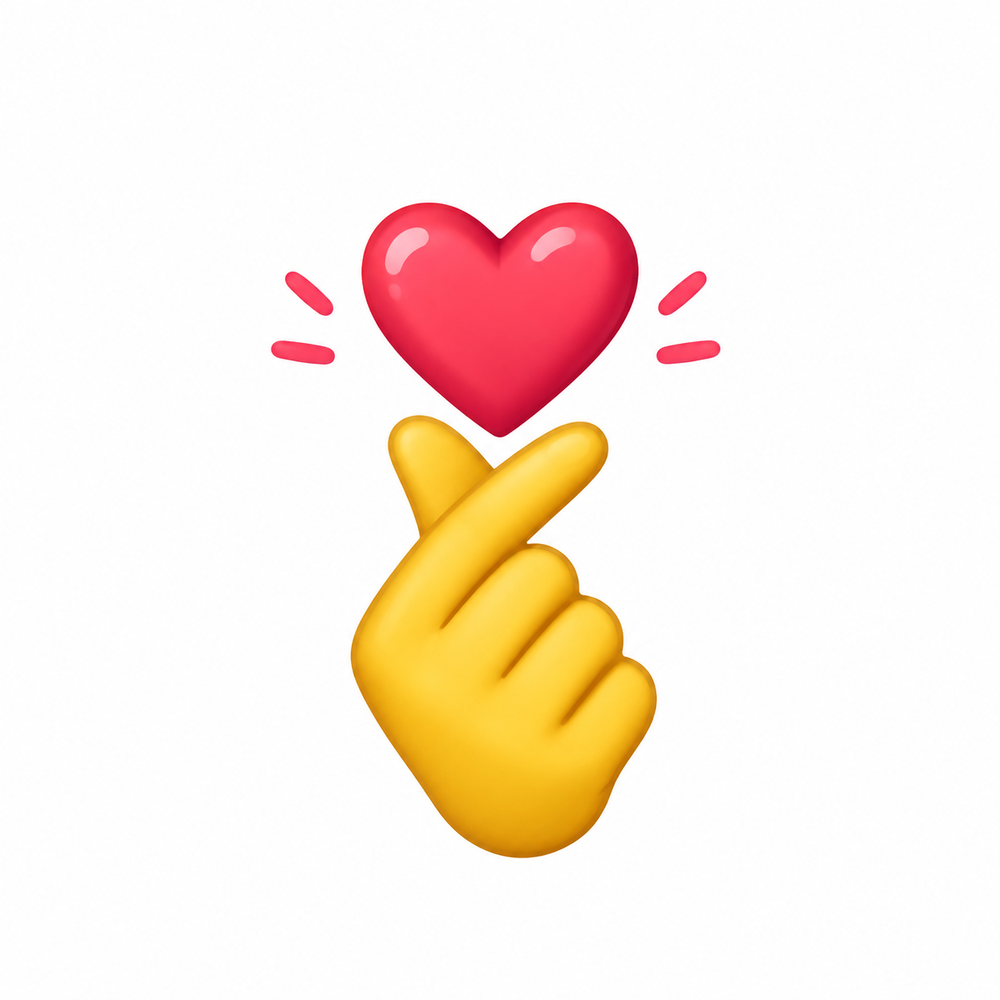
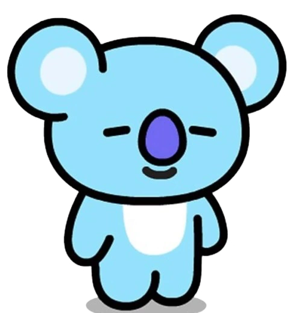
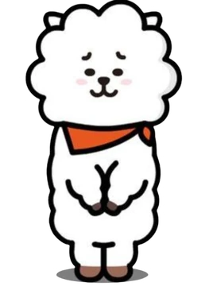
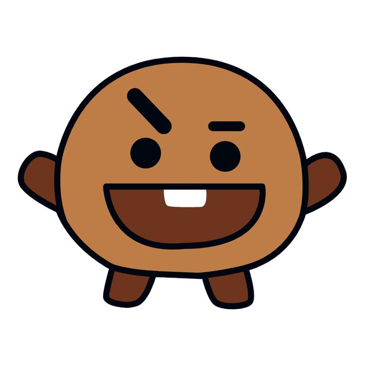

Meu primeiro post
Por: Sara dutra, uma army
Boas-vindas aos fas de BTS, aqui vou compartilhar a historia do bts para fas.
Conhecimento sobre o BTS
Por: Sara dutra, uma army
Boas-vindas aos fas de BTS, aqui vou compartilhar a historia do bts para fas.

O BTS é um grupo sul-coreano de K-pop formado por sete integrantes: RM, Jin, SUGA, J-Hope, Jimin, V e Jungkook. O grupo estreou em 2013 e se tornou um dos maiores nomes da música mundial. Suas músicas abordam temas como amizade, amor, juventude, autoestima e superação. Além da música, o BTS também é conhecido por suas coreografias, performances e pela forte conexão com seus fãs, chamados de ARMY.

Kim Namjoon, conhecido como RM, é o líder do BTS. Ele é rapper, compositor e produtor musical, conhecido por sua inteligência, talento e personalidade tranquila. Namjoon ama arte, livros e natureza, além de transmitir mensagens profundas por meio de suas músicas. É uma pessoa admirada por sua liderança e por inspirar milhões de fãs ao redor do mundo.

Kim Seok-jin, mais conhecido como Jin, é o membro mais velho do grupo e é conhecido por seu talento, carisma e aquele jeitinho divertido que conquista todo mundo. Além de ser um ótimo cantor, Jin também se destaca pela personalidade brincalhona e pelo carinho que demonstra pelos ARMYs.

Min Yoongi, conhecido mundialmente como SUGA ou Agust D, é um rapper, compositor e produtor musical sul-coreano que faz parte do BTS. Com seu talento, sua personalidade marcante e suas letras profundas, Yoongi conquista corações ao redor do mundo.